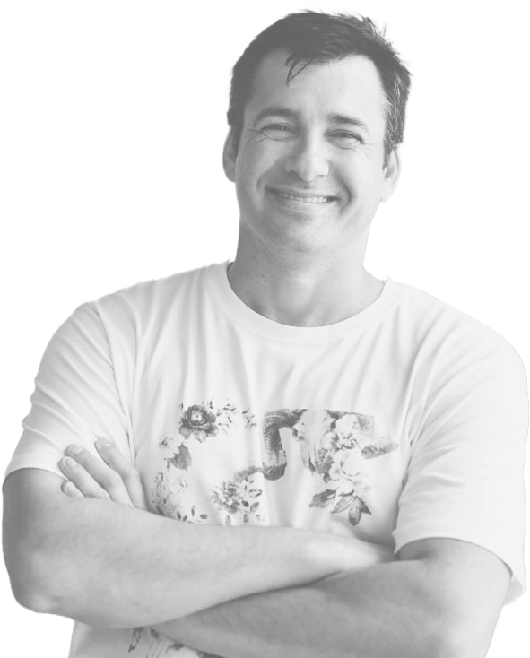
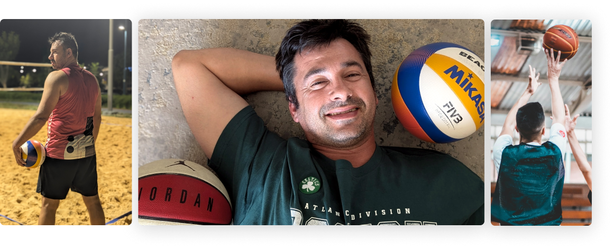
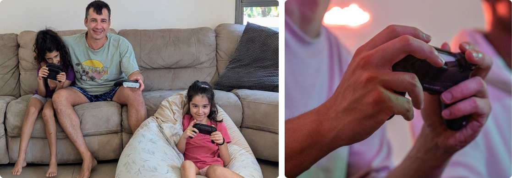
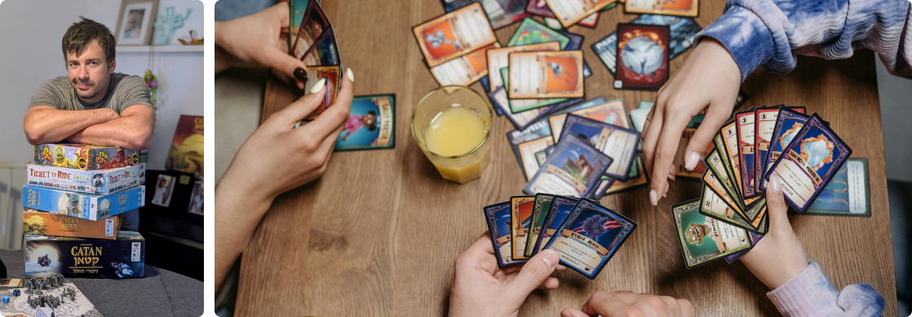

About Me
I'm a product designer who's spent 15+ years turning complex problems into products people actually use. I've worked across digital health, cybersecurity, and enterprise SaaS — always at the intersection of strategy, research, and craft.

Experience
↓ Download CVIndependent Projects
Product Design & UX Consultant
Totango
Lead Product Designer
Source Defence
Sr. Product Designer
Ideo Digital
Head of Design
Wizecare
Lead Product Designer & Product Manager
Netcraft
Project Lead, UX/UI Designer
Studio Pop
Founder, Product Design & UX Consultant
Education
Bezalel Academy of Arts & Design
B.Des, Visual Communication · Jerusalem
Skills
Design & UX
Strategy & Product
AI & Tools
Still in the Game
From league basketball to beach volleyball — sport is my reset button. Still competing, still learning what performance under pressure really means.


Bonus Time
Commodore 64 to PlayStation to PC. Gaming runs deep — from late-night solo sessions to couch co-op with my kids. Where play meets design most directly.
Family of Dice
Board games are a family religion at our house. Phones down, dice out — just enough trash talk to keep it interesting.
